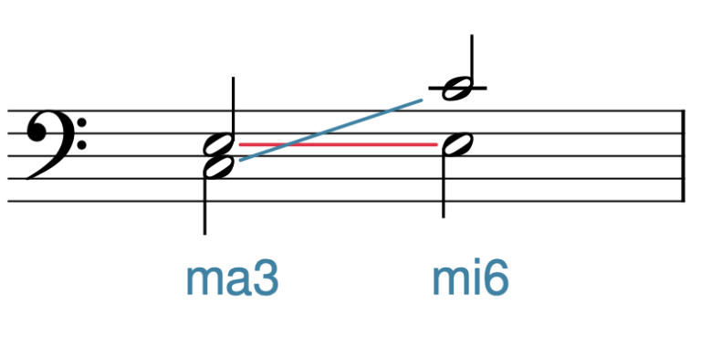

音程：乐理的原子
音程是两个音之间的距离，也是后面所有音阶、和弦、琶音和扒歌的最小构件。吉他手最大的优势是：同一个音程在指板上就是固定的几何形状（只需要记住跨过 3–2 弦时向高品挪一品）。
1. 全局地图
2. 逐个概念
① 音程的两半：度数 + 性质
- 是什么
- 音程名字永远由两部分构成。先数字母（包含首尾）：C 到 E 经过 C D E，是三度；C 到 F♭ 经过 C D E F，是四度。再数半音数决定性质：纯（Perfect）只用于 1、4、5、8 度；大/小（Major/Minor）只用于 2、3、6、7 度。
- 为什么需要
- 大三度和减四度都是 4 个半音，如果不看字母只数格子，会把和弦拼得乱七八糟（比如把 C 大三和弦写成 C–F♭–G）。
- 常见误解
- “纯三度”“大五度”——错！纯家族（1、4、5、8）没有大小，大小家族（2、3、6、7）没有纯。
② 12 个半音程与参考曲耳感
- 对照表（点击即可试听）
-
半音 常见名 参考曲 / 听感 试听 1 小二度 m2 《大白鲨》主题，极度紧张摩擦 2 大二度 M2 《生日快乐》“Happy Birth-”，一步跨出 3 小三度 m3 《Seven Nation Army》E→G，暗、忧郁 4 大三度 M3 《圣者进行曲》开头，明亮肯定 5 纯四度 P4 《婚礼进行曲》开头，号角感 6 三全音 A4/d5 《Maria》“Ma-ri-”，最不稳定、想解决 7 纯五度 P5 《小星星》1→5，摇滚强力和弦骨架 8 小六度 m6 《Love Story》主题，深情悲怆 9 大六度 M6 《My Bonnie》，开阔温暖 10 小七度 m7 《Star Trek》开头，属七和弦灵魂 11 大七度 M7 《Take On Me》副歌，梦幻微酸 12 纯八度 P8 《Somewhere Over the Rainbow》开头
③ 等音程（Enharmonic Intervals）
- 是什么
- 两个音在指板上位置相同、但字母距离不同，就得到等音程。最典型的是 6 个半音的三全音：C→F♯ 是增四度（4 个字母），C→G♭ 是减五度（5 个字母）。还有 C7♯9 里的 C→D♯（增二度 = 3 个半音），和 C→E♭（小三度）位置相同但拼写不同。
- 为什么需要
- 拼写决定和声去向：增四度倾向向外扩张解决（F♯ 往上到 G），减五度倾向向内收缩解决（G♭ 往下到 F）。
- 试听对比
- 常见误解
- “听起来一样，叫什么无所谓。”在 C7♯9（Hendrix 和弦）里写 D♯ 表示它是 9 音的升高变化，写 E♭ 会变成大三小三并存的错误拼写。
④ 音程转位（Inversion）
- 是什么
- 把低音翻高八度（或高音翻低八度），叫音程转位。口诀：度数相加等于 9；性质大变小、小变大、增变减、减变增、纯还是纯。半音数相加永远等于 12。
- 在指板上
- 大三度（5 弦 3 品 C → 4 弦 2 品 E，4 半音）把 C 翻高八度到 3 弦 5 品，变成 4 弦 2 品 E → 3 弦 5 品 C，正好是小六度（8 半音）。
- 常见误解
- “转位后纯四度变小五度。”纯家族转位后依然是纯：纯四度（5 半音）转位是纯五度（7 半音）。
⑤ 指板上的相邻弦形状与 3–2 弦补偿
- 是什么
- 因为 6→5、5→4、4→3、2→1 弦都是纯四度（5 个半音），把高音放到下一根弦上就自动“借走 5 个半音”：
• 纯四度（5 半音）= 下一根弦同品
• 纯五度（7 半音）= 下一根弦+2 品（强力和弦！）
• 大三度（4 半音）= 下一根弦−1 品
• 小三度（3 半音）= 下一根弦−2 品
一旦跨过 3 弦和 2 弦（大三度，只有 4 半音），上面所有偏移量全部再 +1 品：纯四变 +1 品，大三变同品！ - 为什么需要
- 记熟这 4 个“相对指型”，全指板任意根音都能在 1 秒内找准三音、五音、七音，不用从头数品格。
- 常见误解
- “把 6–5 弦的形状原封不动搬到 3–2 弦上。”结果弹出来的全少半音——3–2 弦的强力和弦指法必须跨 3 品而不是 2 品！
⑥ 协和与不协和
- 是什么
- 完全协和：P1, P8, P5（空旷稳定）；不完全协和：M3, m3, M6, m6（丰满悦耳）；不协和：m2, M2, m7, M7, 三全音（制造张力与推动力）。
- 为什么需要
- 音乐的呼吸靠“紧张→解决”。属七和弦（如 G7）之所以拼命想回 C，就是因为里面的 3 音（B）和 ♭7 音（F）构成不协和的三全音。
- 常见误解
- “不协和就是难听，应该避开。”恰恰相反，没有不协和音程的推动，和弦进行就会像一潭死水没有方向。
3. 交互实验室：指板音程形状（6–5 弦 vs 3–2 弦对比）
4. 上琴练习
- 12 个音程单/双弦走遍：从 6 弦第 5 品 A 出发，在 6–5 弦上依次弹出 m2 到 P8；再到 3 弦第 2 品 A 出发，在 3–2 弦上再弹一遍，对比偏移。完成标准：不看图，任给根音 5 秒内弹出 m3、M3、P4、P5、m7。
- 自建参考曲表：12 个音程每个配一首你自己哼得出的歌，在吉他上弹出开头两个音确认。
- 每日 5 分钟音程听辨：打开本站「练耳与节奏」→ 音程听辨，先用 m3/M3/P4/P5/P8，正确率过 80% 再开全部 12 个。完成标准：十题对八题以上。
- 先唱后弹：弹一个根音，先用嘴唱出大三度和纯五度，再按出来核对音准。
5. 分歧点对照
| 容易混淆 | 本质区别 | 吉他实战怎么用 |
|---|---|---|
| A4 增四度 vs d5 减五度 | 都是 6 半音（三全音），A4 跨 4 个字母，d5 跨 5 个字母 | C7 里的 E–B♭ 是 d5，倾向向内解决到 F–A；F 利底亚里的 F–B 是 A4 |
| 6–5 弦形状 vs 3–2 弦形状 | G 到 B 只有 4 半音（少 1 半音） | 任何跨过 3–2 弦的双音/三和弦指型，2 弦及 1 弦都要往高品挪 1 品 |
| 旋律音程 vs 和声音程 | 先后弹 vs 同时弹 | 同时弹才能听清三音/七音的拍频摩擦（如布鲁斯里的三全音） |
6. 读原资料指南
- OMT: Intervals：重点读 Generic vs Specific Intervals、Consonance & Dissonance 和 Inversion；用吉他替代钢琴图做一遍它的半音数法。 已嵌入下方全文
- musictheory.net: Specific Intervals & Interval Inversion：5 分钟快速过一遍符号表。
📖 本地精要（免跳转直接看：音程性质（Specific Intervals）符号与 12 半音速查）
- 【纯音程家族 1/4/5/8 vs 大小音程家族 2/3/6/7】纯度减半音=减(d)、加半音=增(A)；大小家族大(M)减半音=小(m)、再减=减(d)、大加半音=增(A)。
- 【指板验证】P4=5 半音（相邻弦同品，过 3–2 弦 +1 品）、P5=7 半音、M3=4 半音、m3=3 半音、TT 三全音=6 半音。
📖 本地精要（免跳转直接看：音程转位（Interval Inversion）核心 9 减法则）
- 【度数相加=9，性质互换】原位度数 + 转位度数 = 9（3↔6、2↔7、4↔5）；半音数相加 = 12；性质变化：大↔小，增↔减，纯→纯。
- 【吉他实战意义】比如 C→E 是大三度(4半音)，反过来 E→C 就是小六度(8半音)；这也是双吉他三/六度和声与三和弦转位的对称原理。
- Scotty West《Absolutely Understand Guitar》：第 3～5 课专门讲半音尺与音程体系，极其清晰。
📖 本地精要（免跳转直接看：Scotty West 32 课《Absolutely Understand Guitar》全套核心提炼）
- 【指板底层几何】吉他不是 6 根独立的弦，而是一条折叠起来的半音阶尺子；由于 3→2 弦是大三度（4 半音）而非纯四度（5 半音），任何跨过 2、3 弦的音程、和弦或音阶形状都必须往高品方向平移 +1 品。
- 【五指模式（5 Finger Patterns）】CAGED 的本质是同一条大调音阶在指板上的 5 个相邻切片，每个切片内部都装着该调的 I、IV、V 三和弦。
- 【色彩与情绪光谱】把 7 种调式按明亮到阴暗排列（利底亚 → 伊奥尼亚 → 混合利底亚 → 多利亚 → 爱奥利亚 → 弗里几亚 → 洛克里亚），每往右一步正好降一个音级（五度圈逆时针移动一格）。
音程IntervalsOMT · 音程
Intervals音程
- Two pitches form an interval, which is usually defined as the distance between two notes.两个音高构成一个音程，通常定义为两个音之间的距离。
- Melodic intervals are played or sung separately, while harmonic intervals are played or sung together.旋律音程是分开演奏或演唱的（先后发声），而和声音程是同时演奏或演唱的。
- Every interval has a size and a quality. An interval's size is the distance between two notes on a staff—i.e., it is a measurement of the number of lines and spaces between two notes.每个音程都有度数和性质。音程的度数是五线谱上两个音之间的距离——也就是说，它衡量两音之间跨越了多少条线和间。
- Interval size is considered generic. In other words, it doesn't matter what accidentals you apply to the notes, the size is always the same.音程的度数是泛指级数（通用度数）。换句话说，不管你在音符上加了什么变音记号，度数始终不变。
- A quality makes an interval specific when used in combination with a size. Unisons, fourths, fifths, and octaves form perfect intervals, while seconds, thirds, sixths, and sevenths form major and minor intervals.将性质与度数结合，音程才变得具体精确。一度、四度、五度和八度构成纯音程，而二度、三度、六度和七度构成大小音程。
- Any interval can be augmented or diminished. Augmented intervals are one half step larger than a perfect or major interval. Diminished intervals are one half step smaller than a perfect or minor interval.任何音程都可以变成增音程或减音程。增音程比纯音程或大音程宽一个半音。减音程比纯音程或小音程窄一个半音。
- Intervals between a unison and an octave are called simple intervals. Any interval larger than an octave is a compound interval.从同度（一度）到八度之间的音程称为单音程。任何超过八度的音程都是复音程。
- Intervallic inversion occurs when two notes are "flipped." When you need to identify an interval where the lower note is the tonic of a difficult or imaginary major key, inverting the interval can help.当把两个音上下“翻转”时，就发生了音程转位。当你需要识别一个音程，而它下方的音正好属于某个生僻调或“假想大调”时，先做转位能帮大忙。
- Consonant intervals are intervals that are considered more stable, as if they do not need to resolve, while dissonant intervals are considered less stable, as if they do need to resolve.协和音程听起来更稳定、仿佛不需要解决；而不协和音程听起来更不稳定、需要继续解决。
Two pitches form an interval, which is usually defined as the distance between two notes. But what does an interval measure? Physical distance on the staff? Difference in wavelength between pitches? Something else? Music theorists have had contradictory ideas on the definition of "interval," and these definitions have varied greatly with milieu. This chapter will focus on intervals as a measure of two things: written distance between two notes on a staff, and an aural "distance" (or space) between two sounding pitches. It will be important to keep in mind at all times that intervals are both written and aural, so that you are thinking of them musically (and not simply as an abstract concept that you are writing and reading).两个音高构成一个音程，通常定义为两音之间的距离。但音程究竟衡量什么？五线谱上的物理距离？两音之间的波长差异？还是别的什么？音乐理论家们对“音程”的定义各执一词，而且这些定义随不同的时代语境大相径庭。本章聚焦于用音程衡量两件事：五线谱上两个音之间的记谱距离，以及两个发声音高之间的听觉“距离”（空间感）。请时刻记住：音程既是纸面上的也是声音里的，这样你才是在用音乐思维看它，而不是把它当成纸上干巴巴的抽象概念。
Open Music Theory · 音程（Intervals）。原文作者：Chelsey Hamm and Bryn Hughes。Open Music Theory, Version 2，CC BY-SA 4.0。中文为本站翻译，以英文原文为准。
度数SizeOMT · 音程
Size度数
Intervals can be melodic (played or sung separately) or harmonic (played or sung together). In Example 1, the notes in the first measure sound together (harmonically), while in the second measure, they sound separately (melodically).音程可以是旋律音程（分开弹唱），也可以是和声音程（同时发声）。在例 1 中，第 1 小节的两音同时发声（和声性），第 2 小节则是先后发声（旋律性）。
Example 1. A harmonic and a melodic interval.例 1. 一个和声音程与一个旋律音程。
Every interval has a size and a quality. A size is the distance between two notes on a staff—i.e., it is a measurement of the number of lines and spaces between two notes. Sizes are written with Arabic numbers (2, 3, 4, etc.); however, they are spoken with ordinal numbers (second, third, fourth, fifth, sixth, seventh, etc.). Always begin with "one" when counting size. Example 2 shows the eight sizes within a C major scale. As you can see, the sizes are labeled with ordinal numbers, with two exceptions: the interval between two notes on the same line or space is called a “unison,” not a “first,” and notes eight lines and spaces apart are said to be an “octave,” not an “eighth.”每个音程都有度数和性质。度数是五线谱上两个音之间的距离——也就是两音一共占据几条线和几个间。度数通常用阿拉伯数字写出（2、3、4 等），读作“二度、三度、四度……”。数度数时永远要从低音“1”开始数。例 2 展示了 C 大调音阶里的八个度数。可以看到各度数都按序数词命名，只有两个例外：在同一条线或同一个间上的两音叫作“同度（unison）”而不叫“一度（first）”；相隔八条线和间的两音叫作“八度（octave）”而不叫“八数”。
Example 2. Sizes of intervals.例 2. 音程的度数。
Size is considered generic. In other words, it doesn't matter what accidentals you apply to the notes—the size is always the same. Example 3 demonstrates this: despite the different accidentals, each of these intervals is a third (or “generic third”) because there are three lines/spaces between the two notes.度数被视为泛指级数（通用度数）。也就是说，无论你对音符加了什么变音记号，度数永远不会改变。例 3 演示了这一点：尽管变音记号不同，下面每一组音程都是三度（“泛指三度”），因为两音之间都隔着三条线/间。
Example 3. Accidentals do not affect an interval's generic size.例 3. 变音记号不影响音程的通用度数。
You can practice identifying interval size with the following exercise:你可以用下面这个练习训练识别音程的度数：
Open Music Theory · 音程（Intervals）。原文作者：Chelsey Hamm and Bryn Hughes。Open Music Theory, Version 2，CC BY-SA 4.0。中文为本站翻译，以英文原文为准。
纯、大、小音程性质Perfect, Major, and Minor QualitiesOMT · 音程
Perfect, Major, and Minor Qualities纯、大、小音程性质
A quality makes an interval specific when used in combination with a size. Quality more precisely measures written distance between notes, and—in combination with an interval's size—it describes the aural sound of an interval.性质与度数配合使用，就能把音程精确下来。性质更精准地丈量音符之间的音高距离，并与度数一道描述该音程实际的音响色彩。
There are five possible interval qualities:音程共有五种可能的性质：
- Augmented (designated as A or +)增音程（记作 A 或 +）
- Major (ma)大音程（ma）
- Perfect (P)纯音程（P）
- Minor (mi)小音程（mi）
- Diminished (d or o)减音程（d 或 o）
The quality comes before the size when saying or writing an interval. For example, an interval could be described as a "perfect fourth" (abbreviated P4), a "minor third" (abbreviated mi3), or an "augmented second" (abbreviated A2 or +2).在口述或书写音程时，性质总是放在度数前面。例如可以说成“纯四度”（缩写 P4）、“小三度”（缩写 mi3）或“增二度”（缩写 A2 或 +2）。
For now, we will only discuss three qualities: perfect, major, and minor. Different theorists (in different locations and time periods) have applied these qualities to different sizes of intervals, depending on milieu. Example 4 shows how these qualities are applied today. The left column shows that seconds, thirds, sixths, and sevenths are major and/or minor, while the right column shows that unisons, fourths, fifths, and octaves are perfect intervals.本节我们先只讨论其中三种性质：纯、大、小。历史上的理论家们曾在不同语境下将这些性质分配给不同度数的音程。例 4 展示了现代通用规则：左栏显示二度、三度、六度、七度属于大/小音程家族，右栏显示同度、四度、五度、八度属于纯音程家族。
| Major/Minor大 / 小音程 | Perfect纯音程 |
|---|---|
| 2nds二度 | Unisons同度（一度） |
| 3rds三度 | 4ths四度 |
| 6ths六度 | 5ths五度 |
| 7ths七度 | Octaves八度 |
Example 4. Interval qualities.例 4. 音程性质分类。
Open Music Theory · 音程（Intervals）。原文作者：Chelsey Hamm and Bryn Hughes。Open Music Theory, Version 2，CC BY-SA 4.0。中文为本站翻译，以英文原文为准。
用“大调音阶法”判定音程性质The "Major Scale" Method for Determining QualityOMT · 音程
The "Major Scale" Method for Determining Quality用“大调音阶法”判定音程性质
There are several different methods for learning to write and identify qualities of intervals. One method you may have heard of is counting half steps. We do not recommend this method, because it is time consuming and often inaccurate. Instead, we recommend using what you know about major scales to identify interval quality.识别和书写音程性质的方法不止一种。你可能听过“数半音法”，但我们不推荐这么做，因为它费时而且极易数错。相反，我们建议利用你对大调音阶的了解来快速判别音程性质。
To identify an interval (size and quality) using this method, complete the following steps:使用这一方法识别音程（度数与性质）请按下列步骤操作：
- Determine size (by counting lines and spaces between the notes).数出度数（计算五线谱上两音包含的线和间数目）。
- Imagine that the bottom note of the interval is the tonic of a major scale.把下方的音（根音/底音）假想成某个大调音阶的主音。
- Determine whether or not the top note is in the bottom note's major scale (imagined in step 2) and assign the corresponding quality.判断上方的音是否落在这个大调音阶（第 2 步假想的调）里，并据此给出性质：
- If it is: the interval is perfect (if it is a unison, fourth, fifth, or octave) or major (if it is a second, third, sixth, or seventh). If it is not: the interval could be minor (a lowered second, third, sixth, or seventh), or it could be augmented or diminished, which will be covered in the next section.如果在里面：若该音程是同度、四度、五度或八度，它就是纯音程；若它是二度、三度、六度或七度，它就是大音程。如果不在里面：它可能是小音程（比大二/三/六/七度低半音），或者是下一节要讲的增/减音程。
Example 5例 5
shows two intervals. Try identifying their size and quality:展示了两个音程，试着判别它们的度数与性质：
Example 5. Two intervals.例 5. 两个音程实例。
In Example 5a, the notes are F and C in treble clef. Here is how you would use the “Major Scale” method to identify the interval:在例 5a 中，高音谱表上的两个音是 F 和 C。下面演示如何用“大调音阶法”判断它：
- First, this interval is a generic fifth (F to itself is 1; to G is 2; to A is 3; to B is 4; to C is 5).第一步，这是一个泛指五度（F 本身算 1，G 为 2，A 为 3，B 为 4，C 为 5）。
- Second, C is within the key of F major (which has one flat, B♭).第二步，C 在 F 大调（只有一个降号 B♭）的音阶里面。
- Therefore, the interval is a perfect fifth.因此，这个音程是纯五度（P5）。
Let's now use this process for Example 5b. The notes in this example are E♭ and C♭ in treble clef. Let’s go through the same process again:现在对例 5b 走一遍同样流程。这个例子的两个音是高音谱表的 E♭ 与 C♭。步骤如下：
- First, this interval is a generic sixth (E♭ to itself is 1; to F is 2; to G is 3; to A is 4; to B is 5; to C is 6).第一步，这是一个泛指六度（E♭ 算 1，F 为 2，G 为 3，A 为 4，B 为 5，C 为 6）。
- Second, C♭ is not in the key of E♭ major (which has three flats: B♭, E♭, and A♭).第二步，C♭ 并不在 E♭ 大调（三个降号 B♭、E♭、A♭）音阶里。
- Therefore, this is a minor sixth. If it were a major sixth, then the C would have to be C♮ instead of C♭, because C♮ is in the key of E♭ major.相反，比自然 E♭ 大调里的 C♮ 低了一个半音——所以它是小六度（mi6）。如果想要大六度，高音必须是 C♮ 而不是 C♭。
You can practice identifying perfect, major, and minor intervals with the following exercise:你可以用下面这个练习巩固纯、大、小音程识别：
Open Music Theory · 音程（Intervals）。原文作者：Chelsey Hamm and Bryn Hughes。Open Music Theory, Version 2，CC BY-SA 4.0。中文为本站翻译，以英文原文为准。
增音程与减音程性质Augmented and Diminished QualitiesOMT · 音程
Augmented and Diminished Qualities增音程与减音程性质
To review, there are five possible interval qualities, of which we have covered major, minor, and perfect:回顾一下，音程共有五种性质，前面已覆盖大、小、纯三种：
- Augmented (designated as A or +)增音程（记作 A 或 +）
- Major (ma)大音程（ma）
- Perfect (P)纯音程（P）
- Minor (mi)小音程（mi）
- Diminished (d or o)减音程（d 或 o）
Augmented intervals are one half step larger than a perfect or major interval. The first measure of Example 6a first shows the notes F and C, which form a perfect fifth (because C is in the key of F major). The top note of this interval is then raised by a half step to a C♯, making the interval one half step larger. The interval from F to C♯ is therefore an augmented fifth (abbreviated as either A5 or +5). In the second measure of Example 6a, the first interval is a major sixth between G and E (because E is in the key of G major). The top note is then raised by a half step to E♯, making the interval into an augmented sixth (A6 or +6).增音程比纯音程或大音程多出一个半音。例 6a 第 1 小节先写出 F 与 C 构成纯五度（C 在 F 大调里）；随后上方音升高半音变成 C♯，使音程扩大了一个半音，所以 F–C♯ 是增五度（简写 A5 或 +5）。在例 6a 第 2 小节，G 与 E 构成大六度（E 在 G 大调里），随后上方 E 升高半音成 E♯，就成了增六度（A6 或 +6）。
The bottom note of an interval can be altered as well. In the first measure of Example 6b, the perfect fifth F–C is turned into an augmented fifth by lowering the F by a half step to F♭, which makes the interval one half step larger than a perfect fifth. In the second measure of Example 6b, the major sixth G–E is turned into an augmented sixth by lowering the G by a half step to G♭.音程下方的音同样可以被改动。在例 6b 第 1 小节，纯五度 F–C 通过把下方 F 降低半音变成 F♭ 而扩大了半音，成了增五度；第 2 小节的大六度 G–E 把下方 G 降成 G♭ 也成了增六度。
Example 6. Augmented intervals created by (a) raising the top note and (b) lowering the bottom note.例 6. 通过 (a) 升高上方音 与 (b) 降低下方音 构成增音程。
Diminished intervals are one half step smaller than a perfect or minor interval. In the first measure of Example 7a, the perfect fifth F–C is made a half step smaller by lowering the top note to C♭, forming a diminished fifth (also called a tritone, usually abbreviated as d5 or o5). In the second measure, G–E form a major sixth, which becomes a minor sixth when the top note is lowered by a half step. The minor sixth then becomes a diminished sixth when the top note is lowered again to E𝄫. Note that contracting an interval by one half step turns perfect and minor intervals into diminished intervals, but it turns major intervals into minor intervals.减音程比纯音程或小音程窄一个半音。在例 7a 第 1 小节，纯五度 F–C 将上方音降为 C♭ 缩短了半音，形成减五度（也称作三全音，常缩写为 d5 或 o5）。第 2 小节中，G–E 先是大六度，上方降半音成小六度，再降成 E𝄫 则成为减六度。切记：将大音程缩小一个半音得到的是小音程；只有把纯音程或小音程再缩小一个半音，得到的才是减音程。
Again, it is not always the top note that is altered. In Example 7b, the perfect fifth F–C becomes diminished when the bottom note moves up a half step to F♯. In the second measure, the major sixth G–E first becomes a minor sixth when the G moves up a half step to G♯. This minor interval then becomes diminished when the G♯ moves to G𝄪 in the third measure, further contracting the interval by another half step.同样，并非永远只改上方音。例 7b 中，纯五度 F–C 把下方音升半音成 F♯ 就变成减五度；第 2 小节大六度 G–E 把下方 G 升半音成 G♯ 先变小六度，第 3 小节再升至 G𝄪 才又缩小半音成为减六度。
Example 7. Diminished intervals created by (a) lowering the top note and (b) raising the bottom note.例 7. 通过 (a) 降低上方音 与 (b) 升高下方音 构成减音程。
Example 8例 8
again demonstrates and summarizes the relative size of intervals. Each bracket in this example is one half step larger or smaller than the brackets to its right and left. In Example 8a, the interval quality is changed by altering the top note with accidentals. As you can see, intervals one half step larger than perfect or major intervals are augmented; intervals one half step smaller than major intervals are minor; and intervals one half step smaller than perfect or minor intervals are diminished. Example 8b outlines the same qualities as 10a, only with the bottom note altered by accidentals instead of the top note.再次总结对比了各类音程的相对宽窄。左右相邻两个括号之间恰好相差一个半音。例 8a 通过变音记号改动上方音来改变性质：比纯或大宽半音是增；比大窄半音是小；比纯或小窄半音是减。例 8b 展现完全一致的规律，只是改用变音记号去动下方的音。
Example 8. Relative size of intervals with (a) the top note altered and (b) the bottom note altered.例 8. 改上方音 (a) 与改下方音 (b) 的音程相对大小关系。
If you find yourself having trouble visualizing the qualities of intervals with accidentals on the staff, it may help to think of the interval kinesthetically. For example, in Example 8a you can put one of your hands over the other (parallel to one another) and move your top hand up or down to reflect the change in quality. You can do the same thing in Example 8b, except you would move your bottom hand up and down. Remember that even though your hands may be moving closer together and further apart, the generic size of the interval remains the same; your hands are representing the changes of quality that occur when accidentals are added, changed, or removed.如果你在五线谱上想象变音记号如何拉伸/压缩音程时感到吃力，试着用肢体动觉（空间比划）去感觉它。例如对照例 8a，你可以一只手掌平举在另一只手掌正上方，只上下移动上面的手来反映距离拉大或缩小；对照例 8b 则保持上面手不动，只上下移动下面的手。记住：不管两只手彼此靠多近或分多开，只要字母度数没变，泛指度数就保持不变，手的移动只代表变音记号改变的性质。
You can practice identifying augmented and diminished intervals with the following exercise:你可以用下面这个练习识别增音程与减音程：
Open Music Theory · 音程（Intervals）。原文作者：Chelsey Hamm and Bryn Hughes。Open Music Theory, Version 2，CC BY-SA 4.0。中文为本站翻译，以英文原文为准。
音程转位Intervallic InversionOMT · 音程
Intervallic Inversion音程转位
Intervallic inversion occurs when two notes are "flipped." In Example 10, for instance, an interval with C on the bottom and E on the top is inverted by moving the C up by an octave. You might be wondering: why is this important? There are two reasons: first, because inverted pairs of notes share many interesting properties (which are sometimes exploited by composers), and second, because inverting a pair of notes can help you to identify or write an interval when you do not want to work from the given bottom note.把两个音上下“翻转”就是音程转位。例如在例 10 中，低音 C 与高音 E 构成的音程，只要把下方的 C 往上移高八度放在 E 上面就完成了转位。你可能会问这有什么重要意义？有两个理由：第一，转位前后的一对音程分享着非常工整的数学规律（作曲家经常利用这一点）；第二，当你遇到一个下方音很难推算（比如属于假想调号）的音程时，先转位会让识别与计算瞬间变得极其简单。

Let's start with the first point: the interesting properties. First, the size of inverted pairs always adds up to 9:先看第一点规律：转位前后一对音程的度数之和永远等于 9：
- Unisons (1s) invert to octaves (8s) (1 + 8 = 9) and octaves invert to unisons.同度（1）转位成八度（8）（1 + 8 = 9），反之亦然。
- Seconds invert to sevenths (2 + 7 = 9) and sevenths invert to seconds.二度转位成七度（2 + 7 = 9），反之亦然。
- Thirds invert to sixths (3 + 6 = 9) and sixths invert to thirds.三度转位成六度（3 + 6 = 9），反之亦然。
- Fourths invert to fifths (4 + 5 = 9) and fifths invert to fourths.四度转位成五度（4 + 5 = 9），反之亦然。
Qualities of inverted pairs of notes are also very consistent:转位前后性质的变换规律也非常固定：
- Perfect intervals invert to perfect intervals.纯音程转位后依然是纯音程。
- Major intervals invert to minor intervals (and minor intervals to major intervals).大音程转位成小音程（小音程转位成大音程）。
- Augmented intervals invert to diminished intervals (and diminished intervals to augmented intervals).增音程转位成减音程（减音程转位成增音程）。
With that information, you can now calculate the inversions of intervals without even looking at staff paper. For example: a major seventh inverts to a minor second, an augmented sixth inverts to a diminished third, and a perfect fourth inverts to a perfect fifth.掌握这两条规律，不用看五线谱你就能心算出转位结果：比如大七度转位成小二度，增六度转位成减三度，纯四度转位成纯五度。
Now for the second point: sometimes you will come across an interval that you do not want to calculate or identify from the bottom note. In the interval E𝄫–A♭ written in Example 11, for instance, identifying the interval using the “Major Scale” method would not work—the bottom note is E𝄫, and there is no key signature for this note (its key signature is “imaginary”). So, if you were given this interval to identify, you might consider inverting the interval. Now the inversion of the interval can be calculated from the non-imaginary key of A♭ major. The key of A♭ major has four flats (B♭, E♭, A♭, and D♭). An E♭ above A♭ would therefore be a perfect fifth; however, this interval has been contracted (made a half step smaller) because the E♭ has been lowered to E𝄫. That means this interval is a d5 (diminished fifth).再来看第二点实用技巧：有时你会遇到不想直接从下方音推算的音程。比如例 11 的 E𝄫–A♭，用“大调音阶法”就会卡住——下方音 E𝄫 根本不存在常规调号（它是一个“假想调”）。此时先把这个音程转位变成 A♭–E𝄫！现在上方音按大家都熟的 A♭ 大调（四个降号：B♭、E♭、A♭、D♭）来算：A♭ 上方的 E♭ 本应是纯五度，现在降成 E𝄫 缩窄了一个半音，所以转位结果是减五度（d5）。
Now that we know the inversion of the first interval is a d5, we can calculate the original interval. A diminished fifth inverts to an augmented fourth (because diminished intervals invert to augmented intervals and because five plus four equals nine). Thus, the first interval is an augmented fourth (A4).既然转位后的音程是 d5，我们把它翻回原位：减五度变增四度（因为减转成增、且 5 + 4 = 9）。因此，原音程 E𝄫–A♭ 就是增四度（A4）！
Open Music Theory · 音程（Intervals）。原文作者：Chelsey Hamm and Bryn Hughes。Open Music Theory, Version 2，CC BY-SA 4.0。中文为本站翻译，以英文原文为准。图片版权：Simple Versus Compound © Megan Lavengood is licensed under a CC BY-SA (Attribution ShareAlike) license；Inversion © Megan Lavengood is licensed under a CC BY-SA (Attribution ShareAlike) license；Imaginary © Megan Lavengood is licensed under a CC BY-SA (Attribution ShareAlike) license；White-key-sevenths © Megan Lavengood is licensed under a CC BY-SA (Attribution ShareAlike) license；Enharmonic Equivalence © Megan Lavengood is licensed under a CC BY-SA (Attribution ShareAlike) license
协和与不协和Consonance and DissonanceOMT · 音程
Consonance and Dissonance协和与不协和
Intervals are categorized as consonant or dissonant. Consonant intervals are intervals that are considered more stable, as if they do not need to resolve, while dissonant intervals are considered less stable, as if they do need to resolve. These categorizations have varied with milieu. Example 12 shows a table of melodically consonant and dissonant intervals:音程通常被归类为协和或不协和。协和音程听起来比较稳定、仿佛不需要后续解决；不协和音程听起来不够稳定、仿佛亟需走向解决。这些具体归类曾随不同历史时代语境有所变化。例 12 列出了旋律音程中的协和与不协和分类：
| Melodically Consonant旋律协和音程 | Melodically Dissonant旋律不协和音程 |
|---|---|
| Perfect Intervals纯音程 | Augmented Intervals增音程 |
| ma2, mi2大二度、小二度 | Diminished Intervals减音程 |
| ma3, mi3大三度、小三度 | ma7, mi7大七度、小七度 |
| ma6, mi6大六度、小六度 |
Example 12. Melodically consonant and dissonant intervals.例 12. 旋律性协和与不协和音程。
Example 13例 13
shows harmonically consonant and dissonant intervals:展示了和声音程（同时发声）中的协和与不协和分类：
| Harmonically Consonant和声协和音程 | Harmonically Dissonant和声不协和音程 |
|---|---|
| ma3, mi3大三度、小三度 | ma2, mi2大二度、小二度 |
| ma6, mi6大六度、小六度 | Augmented Intervals增音程 |
| P1, P8, P5P1, P8, P5 | Diminished Intervals减音程 |
| ma7, mi7大七度、小七度 | |
| P4P4 |
Example 13. Harmonically consonant and dissonant intervals.例 13. 和声性协和与不协和音程。
The implications of consonant and dissonant intervals are discussed further in the Introduction to Species Counterpoint.关于协和与不协和音程的深入应用，详见 分类对位法导论 一章。
Open Music Theory · 音程（Intervals）。原文作者：Chelsey Hamm and Bryn Hughes。Open Music Theory, Version 2，CC BY-SA 4.0。中文为本站翻译，以英文原文为准。
吉他指板上的音程几何与 3–2 弦补偿Fretboard Interval Geometry & the B-String Shift吉他专题 · 双语精读 · 吉他指板专题
Fretboard Interval Geometry & the B-String Shift吉他指板上的音程几何与 3–2 弦补偿
In standard tuning (E–A–D–G–B–E), adjacent string pairs 6–5, 5–4, 4–3, and 2–1 are tuned a perfect fourth (5 semitones) apart, while 3–2 (G–B) is tuned a major third (4 semitones) apart.标准调弦（E–A–D–G–B–E）中，6–5、5–4、4–3、2–1 弦相邻都差纯四度（5 半音），唯独 3–2 弦（G–B）只差大三度（4 半音）。
Therefore, moving to the next higher string subtracts 5 semitones—unless you cross the 3–2 boundary, which only subtracts 4 semitones. Any interval shape crossing the 3–2 pair shifts 1 fret higher.因此往高音弦换一根弦等同于减 5 个半音；只要跨过 3–2 弦只减了 4 个半音，所以任何跨过 3–2 弦的音程与八度形状都要向高品多挪 1 品。
双语精读 · 吉他指板专题。电吉他指板与名师实战双语精读（与上面嵌页的 OMT 大学乐理原文互补，涵盖指板几何、CAGED、壳和弦与大师手法）。可切换中/英与术语悬停。
⚡ 本模块其余配套课程与工具的本地精要 / 平替
- ToneDear 练耳：音程听辨（可按方向/音程范围定制） ↗
📖 本地精要（免跳转直接看：ToneDear 音程听辨练习（已完整内置于本站练耳室））
- 【本站直接平替】本站「练耳与节奏 → 音程听辨」已完整支持 G3 预习、基础 5 种、常用 8 种与全部 12 音程的上行/下行/和声听辨，并带参考曲提示。
- musictheory.net 练习：Interval Ear Training（音程听辨） ↗
📖 本地精要（免跳转直接看：musictheory.net 练耳练习（本站练耳室已内置同款训练））
- 直接在本站「练耳与节奏」使用吉他音色进行音程、和弦性质、功能级数与和弦进行听辨。
- musictheory.net 练习：Fretboard Interval Identification ↗
📖 本地精要（免跳转直接看：musictheory.net 指板识别练习（本站指板页已内置同款训练））
- 直接在本站「指板与五度圈」开启“找音练习”（支持屏幕点击或 🎙️ 真琴麦克风识别），或切换音阶/和弦做把位聚焦。
- teoria.com 练耳与乐理练习 ↗
📖 本地精要（免跳转直接看：teoria.com 综合乐理与听辨训练（本站练耳室已内置同款功能））
- 【本站直接平替】直接在本站「练耳与节奏」即可完成音程、三/七和弦、功能级数与 14 种和弦进行的听辨训练。
- Barrett Tagliarino《Guitar Fretboard Workbook》（MI 教材，手把手填空画指板） ↗
📖 本地精要（免跳转直接看：Barrett Tagliarino《Guitar Fretboard Workbook》（MI 教材）指板通关秘籍）
- 【八度 7 种形状】6→4 弦(+2品)、5→3 弦(+2品)、4→2 弦(+3品)、3→1 弦(+3品)，以及跨两根弦的 6→3 弦(-3品)、5→2 弦(-2品)、4→1 弦(-2品)——练熟这 7 个几何对角线，1 秒锁定全指板同名音。
- 【密排三和弦水平+垂直矩阵】先在一组弦（如 4–3–2 弦）横向走通原位→一转→二转，再在同一个品位纵向跨 654→543→432→321 四组弦弹同一个和弦。
7. 自测 5 题
答案
C→D♯ 是增二度（2 个字母）；C→E♭ 是小三度（3 个字母）。
答案
小三度（9 − 6 = 3，大变小），共 3 个半音（原大六度 9 半音，9 + 3 = 12）。
答案
2 弦第 8 品（+3 品）。因为 3–2 弦差大三度（4 半音），需要比普通的 +2 品多补 1 品。
答案
A♯（增四度）或 B♭（减五度），距 E 都是 6 个半音。
答案
大三度 B（3 弦 4 品）、纯五度 D（3 弦 7 品 或 2 弦 3 品！跨过 3–2 弦注意）、小七度 F（2 弦 6 品 或 3 弦 10 品）。
8. 在歌里听一听
- Smoke on the Water（Deep Purple）：纯四度双音 Riff
- Seven Nation Army（The White Stripes）：5 弦 7-7-10-7-5-3-2（P1–m3–M2–M2–m2）
- Maria（《西区故事》）：C→F♯→G，经典三全音上行解决
9. 带去原资料的 3 个问题
- 除了 E 到 B♭ 之外，大调顺阶音里还有哪两个音能构成三全音？为什么只有一个？
- 增音程和减音程在什么情况下会实际出现在和弦与旋律里？
- 哪些音程在复音程（超过八度，如 9、11、13 度）里和单音程有等价关系？